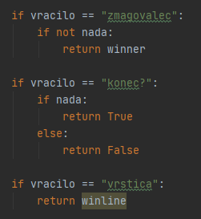

NamenFunkcija win je zadolzena za pregled igralne mreze, da se izve, ce je igra koncana, kdo je zmagal in da poklice winline, ki nam prikaze, kje so tri enaki znaki povrsti. |
|
|||||||||
Kako delujeNajprej pokliče funkcijo win v trivv datoteki (vse vrstice/stolpce in po verikali pregleduje na skoraj enak nacin kot funkcija ai, zato tega ne bom dvakrat pisal) in jo vprasa, ce je igre konec, ce ni konec se funkcija konca in vrne vrednost True. Ce pa je konec, se enkrat pozove to funkcijo in jo vprasa kdo je zmagal. to informacijo potem posreduje funkciji konc iz druge datoteke, ki potem naredi okno, ki igralcu pove, kdo je zmagal.Poklice tudi funkcijo winline, ki vprasa funkcijo win iz druge datoteke, kje so tri znaki v vrsti. Ta informacija je shranjena z dvema znakoma, prvi nam pove v kaksni poziciji so znaki, ce so postrani, v vrsti, ali stolpcu. Druga pa pove v kateri vrsti/stolpcu so. Ko izve kje so, pobarva gumbe na modro. |
 |